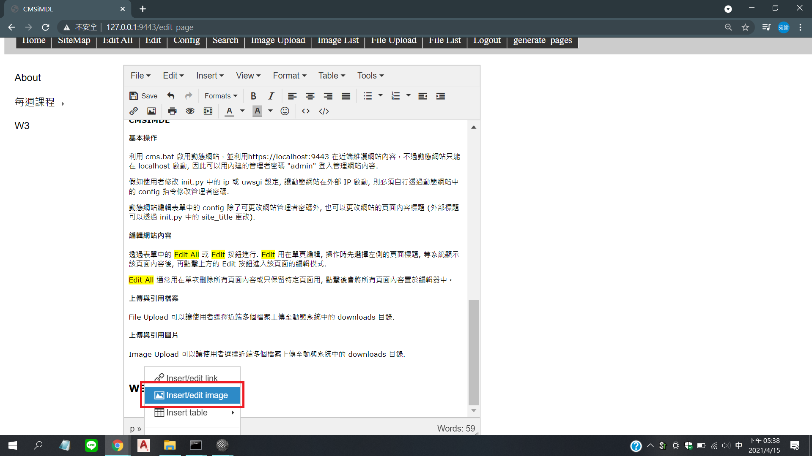
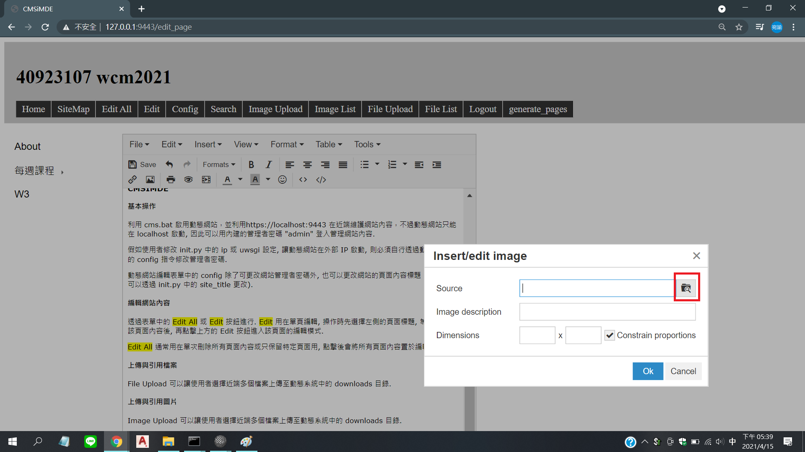
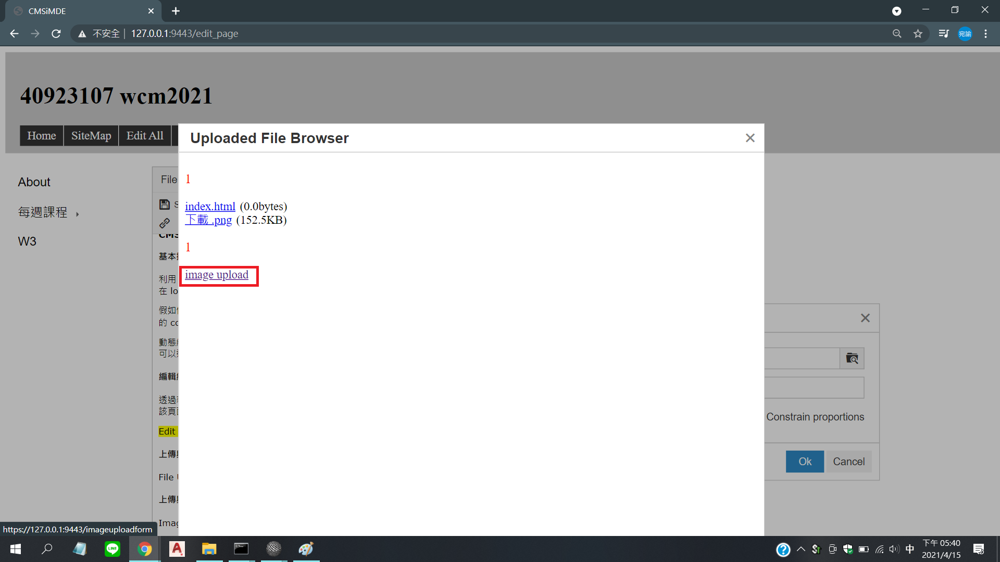
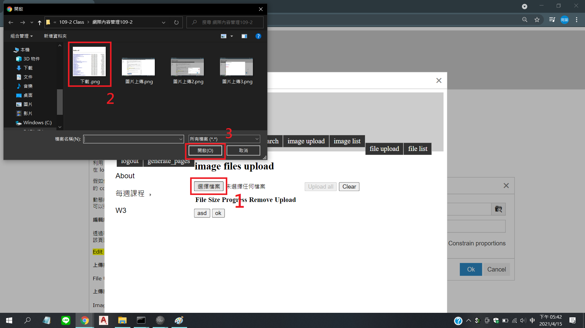
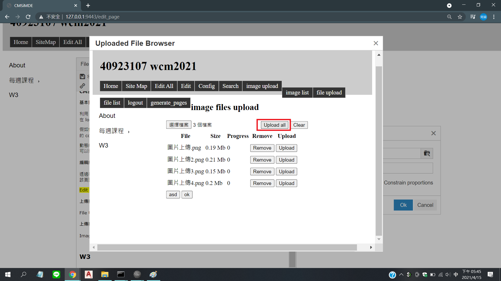
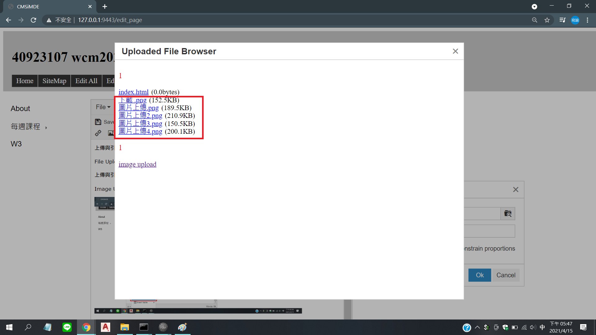

W2 <<
Previous Next >> W3
CMSIMDE
About
Repository:https://github.com/40923107/wcm2021
Github Pages:https://40923107.github.io/wcm2021/content/index.html
利用 cmstemplate 建立以 CMSiMDE 作為子模組的動態與靜態網站
- 登入 Github 帳號
- 將瀏覽器指向 https://github.com/40923107/wcm2021
- 利用 Use this template 建立倉儲
clone 帶有 CMSiMDE 的指令:
|
1
|
git clone --recurse-submodules URL
|
上述 URL 即為希望將倉儲資料取下進行改版的 Github 倉儲網路統一資源位置, 也就是 Github 倉儲網址.
每一個以 cmstemplate 為 template 的倉儲, 其根目錄都帶有:
- init.py - 其中的 site_title, ip 與 port 可以讓使用者自行修改, site_title 是網站標題, ip 為動態網站啟動時所使用的網路位址, 可設為內部或外部 IPv4 (IPv6), port 則是動態網站啟動時所佔用的埠號.
- http-server.py - 執行後會使用內建的 localhost 與 port 8444 伺服 content 子目錄中的 CMSiMDE 靜態網頁.
- cms.bat - 讓使用者執行動態網站用的批次檔案.
- acp.bat - 若使用者已經將倉儲設為 ssh 連線, 且提供遠端與近端的認證模式, 則可以在執行此批次指令之後加上提交字串, 即可執行 git add ., git commit -m "提交訊息", 以及 git push 等三個指令.
基本操作
利用 cms.bat 啟用動態網站，並利用https://localhost:9443 在近端維護網站內容，不過動態網站只能在 localhost 啟動, 因此可以用內建的管理者密碼 "admin" 登入管理網站內容.
假如使用者修改 init.py 中的 ip 或 uwsgi 設定, 讓動態網站在外部 IP 啟動, 則必須自行透過動態網站中的 config 指令修改管理者密碼.
動態網站編輯表單中的 config 除了可更改網站管理者密碼外, 也可以更改網站的頁面內容標題 (外部標題可以透過 init.py 中的 site_title 更改).
編輯網站內容
透過表單中的 Edit All 或 Edit 按鈕進行. Edit 用在單頁編輯, 操作時先選擇左側的頁面標題, 等系統顯示該頁面內容後, 再點擊上方的 Edit 按鈕進入該頁面的編輯模式.
Edit All 通常用在單次刪除所有頁面內容或只保留特定頁面用, 點擊後會將所有頁面內容置於編輯器中。
上傳與引用檔案
File Upload 可以讓使用者選擇近端多個檔案上傳至動態系統中的 downloads 目錄.
上傳與引用圖片
Image Upload 可以讓使用者選擇近端多個檔案上傳至動態系統中的 downloads 目錄.






W2 <<
Previous Next >> W3